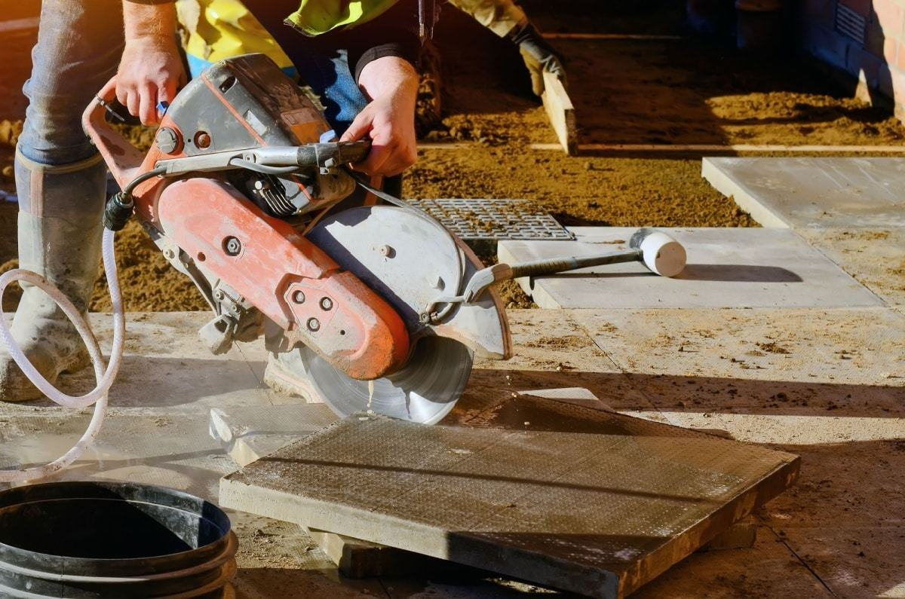
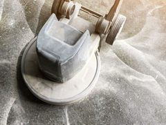
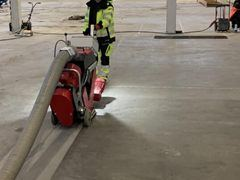
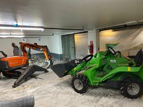
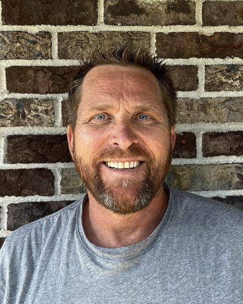
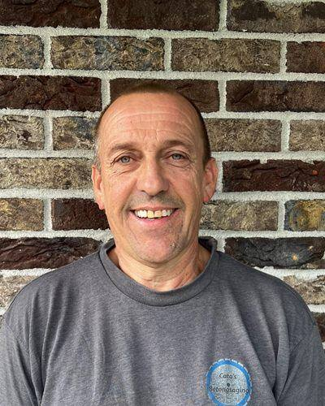
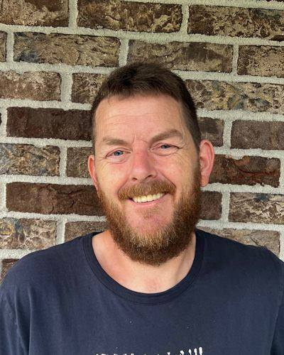

01
Riving og miljøsanering
Riving fra garasje og innvendig rensk til bro og tunge bærende konstruksjoner.
Les merSentralgodkjent · Holmestrand og hele Vestfold
Vi utfører jobb for entreprenører, byggherrer og private, prosjekter store som små. Med over 35 års erfaring innen betongsaging, riving, radonsikring og asbestfjerning vet vi hva vi driver med.
Telefonen er betjent man–fre 07:00–17:00. E-post: post@catosbetongsaging.no
Be om tilbud
Fyll ut navn, telefon eller e-post, og en kort beskrivelse.
Kvittering · –
Denne skissen har ingen server. «Send som e-post» åpner e-postklienten din med alt ferdig utfylt til post@catosbetongsaging.no.

Siden 2007
Alle nødvendige sertifikater innehas for kjerneboring, asbestsanering, betongsaging, innendørs graving og riving, utvidelse av kjeller og mer. Asbest tar vi med høyeste forsiktighet. Bærende mur- og stålvegger kan være kompliserte å jobbe med – med lang erfaring og riktig verktøy gjør vi jobben kvalitetssikret.
Tjenester
Riving, betong, asbest og grunnarbeid går ofte i hverandre. Da er det en fordel at samme mannskap tar hele jobben.
Riving fra garasje og innvendig rensk til bro og tunge bærende konstruksjoner.
Les mer
Utsaging av åpninger og kjerneboring fra Ø12 mm til Ø1200 mm.
Les mer

Inspeksjon, reparasjon og beskyttelse av betong skadet av slitasje og forvitring.
Les mer
Fresing og sliping gir jevne, glatte betongoverflater klare for neste lag.
Les mer
Sandblåsing som fjerner rust, maling, graffiti og epoxy fra metall, tre og betong.
Les mer
Graving og grunnarbeid, også innendørs med utslippsfrie elektriske maskiner.
Les merI tillegg leverer vi støping, forskaling, snekkerarbeid, trefelling, drenering, støttemur, kjellerutvidelse og senking av kjellergulv.
Oppdrag
Et utvalg fra referansene våre: bru, høydebasseng, næringsbygg og skole.
Garda Road Safety, byggherre Buskerud fylkeskommune
Bru
Norsk Betong AS
Kjerneboring med 1100 mm i kum
Pro-Co AS
Fjerning av ca. 140 m² betonggulv
Entreprenørfirma Haakon Skuggedal AS
Avskjæring av forstøtningsmur
Privat kunde
Åpning på 1400 mm i diameter
Kabel Metall & Trafo Gjenvinning AS
Utsaging i massivt betonggulv
Holmestrand
Fjerning av gammelt Siporex-dekke på tak
Slik jobber vi
Du beskriver jobben i skjemaet, på telefon eller e-post. Vi avklarer omfang og hvilke forhold som gjelder på stedet.
Vi ser på jobben og gir et uforpliktende tilbud. Er det asbest i bygget, avtaler vi saneringen før arbeidet starter.
Sertifisert mannskap og riktig utstyr. Sjekklisten før oppstart sendes ansvarlig representant hos oppdragsgiver.
Be om tilbudeller ring 90 05 02 81
Folkene
Mannskapet har dokumentert opplæring i rive- og betongsageutstyr, asbest og miljøsanering, HMS, lift og stillas. Flere har mer enn 34 års erfaring fra bransjen.

Daglig leder og fagleder
Maskinfører, 40 timer HMS, asbest og miljøsanering, lift, dokumentert opplæring i rive- og betongsageutstyr, stillas, anhuker, arbeidsvarsling K1, fallsikring og livreddende førstehjelp.
Driftsleder
Driftsledelse og oppfølging av prosjekter. Fredrik tar også imot innspill til klima- og miljøarbeidet.

Prosjektleder
Rive- og betongsageutstyr, truckfører, 10 tonn minikran, 40 timer HMS, lift, anhuker, stillas 2–5 m, asbest og miljøsanering, arbeidsvarsling K1, fallsikring og livreddende førstehjelp.

Prosjektleder
Rive- og betongsageutstyr, 10 tonn minikran, lift, stor truck, anhuker, asbest og miljøsanering, arbeidsvarsling K1, stillas, fallsikring og livreddende førstehjelp.
I tillegg kommer maskinførere, operatører, fagarbeidere og lærlinger innen riving og miljøsanering. Møt hele mannskapet.
Dokumentasjon
Sentralgodkjenning, egen asbestgodkjenning og miljøsertifisering. Attestene ligger på firmaets egen nettside.
Innen betongsaging, riving og miljøsanering, for privat, bedrift og offentlige bygg.
Egen godkjenning og arbeidsattest for asbestsanering.
Sertifisert siden 2018, med årlig klimaregnskap og offentlig miljørapport.
Registrert leverandør, med attest for skatt og merverdiavgift.
Medlem av MEF.
For gjenvinningsfaget gjennom OKAB: riving, miljøsanering og betongsaging.
Kontakt
Har du behov for våre tjenester? Ta kontakt, så finner vi ut av det sammen. Du får uforpliktende tilbud etter befaring.
Skisse · svarene er hentet fra firmaets egen nettside